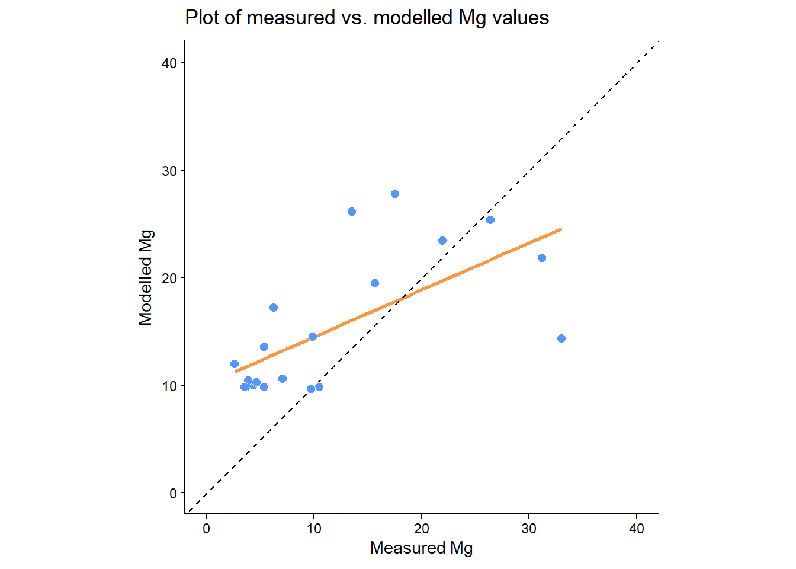

Chapter 13 Handy Hints
This chapter contains a few handy hints which may be useful if you’re having any issues loading R packages or running Whitebox tools. We covered most of these during our session in Week 9 but these are included here for reference.
If there are any questions regarding Assessment 2 or the practical instructions, please do get in touch at my @manchester email.
Errors with R projects and the here package
If you’re working on a university-managed computer, it is likely that you’ve encountered errors during our Week 10 class while trying to use whitebox functions, such as wbt_fill_depressions(), or accessing files using relative file paths via the here package.
This problem actually originates with our use of R projects (described here). R projects are designed to make accessing files simple and to ensure our analyses are self-contained and portable. They do this by automatically setting the working directory in RStudio. You can test this by using the getwd() function, which should print your working directory to the console.
If the R project is working, this should set your working directory to the directory where your R project is saved e.g., an R project file stored in C:/Users/Bob/Documents/GEOG70581 should have an identical working directory.
Unfortunately, R projects are not currently working as intended on university-managed computers: the working directory is not being automatically updated. In most cases, the working directory is stuck at P:/, even if the R project is saved elsewhere! This is a completely new problem for 2023/24 and we’re not sure why, but it is possibly due to changes in the way computers are managed after the recent cyber incident)
This explains why you are struggling to access files using here, but also why whitebox functions are failing, even when inelegant absolute file paths are used. In both cases, R is looking in the wrong place, either for the data files, or the WBT executable.
To fix this, there are two options.
The simplest approach is to start from scratch, downloading the course data, and creating a new R project in the same directory. If successful, it should resemble the following:

The next step is to set the working directory manually using the
setwd()function (see below for an example). This should update the working directory to the correct location, such asC:/Users/Bob/Documents/GEOG70581orP:/GEOG70581depending on where you data are saved, and should be done before installing packages. The practical steps can then be following as normal and thewhiteboxfunctions should work as intended.
Try running the code below, making sure to update the path to the correct working directory.
# FIRST, set your working directory manually
setwd(---YOUR PATH GOES HERE---) # e.g., "C:/Users/Bob/Documents/GEOG70581"
# Function to check and install packages
check.packages <- function(pkg){
new.pkg <- pkg[!(pkg %in% installed.packages()[, "Package"])]
if (length(new.pkg))
install.packages(new.pkg, dependencies = TRUE)
sapply(pkg, require, character.only = TRUE)
}
# Checks and installs packages
packages <- c("ggplot2", "here", "raster", "whitebox", "sf", "ggspatial")
check.packages(packages)
# Initialise whitebox tools executable
whitebox::install_whitebox()
# Check whitebox is in the library and the version
library(whitebox)
wbt_version()
# Sets file path for DEM
dem <- here("data", "practical_1", "dem_10m.tif")
# Prints the file path to the console window
dem
# Fills depressions
wbt_fill_depressions(dem, here("output", "practical_1", "dem_10m_fill.tif"))
# Subtract function; the difference between the processed DEM (filled) and the original DEM
wbt_subtract(here("output", "practical_1", "dem_10m_fill.tif"), # Input file 1
dem, # Input file 2
here("output", "practical_1", "dem_10m_fill_difference.tif")) # Output file
# Loads raster using the raster and here packages
eskdale_dem <- raster(here("output", "practical_1", "dem_10m_fill_difference.tif"))
# Find minimum and maximum values
minimum_value <- min(values(eskdale_dem)[which(values(eskdale_dem) > 0)])
maximum_value <- max(values(eskdale_dem))
# Plots using ggplot
g <- ggplot() +
layer_spatial(eskdale_dem, aes(fill = after_stat(band1))) +
theme_classic() +
labs(fill = "Elevation difference (m)", x = "Easting", y = "Northing") +
scale_fill_continuous(type = "viridis", na.value = NA,
limits = c(minimum_value, maximum_value))
gIf you want to continue with an existing directory/R Project, then you will need to set the working directory manually (
setwd()) and set the origin for theherepackage, as shown below:
# Set the working directory manually
setwd("C:/Users/Bob/Documents/GEOG70581") # UPDATE TO YOUR DIRECTORY
# Manually set the origin for the 'here' package
here::i_am("practical-1-eskdale.R") # UPDATE IF A DIFFERENT FILE NAME USEDThe above solutions have been tested on a range of university-managed computers, working on both the P: and C: drive.
For other installation issues, please contact me on my @manchester email. For other R issues, please post on the forum.
Dealing with errors
Errors are an inevitable aspect of coding, irrespective of how experienced you are! As we gain programming experience, these errors increase in difficulty from initially simple problems, such as incorrect file paths or errors in code syntax, to the more complex.
Being able to deal with errors is therefore an essential programming skill. My top tips for fixing errors are:
Read the error message (red text in the R console). If this appears, it usually means that something has gone wrong! Error messages can vary in quality, but at the very least they should tell you:
- where the error was encountered i.e. which line of code failed.
- some indication as to why the error occurred e.g.
No such file or directory
If the error message doesn’t provide a simple solution to the problem, then the next step should be to work through your code step-by-step, testing each line or code block to ensure it is working correctly (usually using
print()statements).
To illustrate this, here is some code which has failed:
# Function to check and install packages
check.packages <- function(pkg){
new.pkg <- pkg[!(pkg %in% installed.packages()[, "Package"])]
if (length(new.pkg))
install.packages(new.pkg, dependencies = TRUE)
sapply(pkg, require, character.only = TRUE)
}
# Checks and installs packages
packages <- c("ggplot2", "here", "raster", "whitebox")
check.packages(packages)
# Fill depressions in a DEM
wbt_fill_depressions(dem = here("data", "practical_2", "dem_10m.tif"),
output = here("output", "practical_2", "dem_10m_fill.tif"))
# Loads raster
filled_dem <- raster(here("data", "practical_2", "dem_10m_fill.tif"))
# Plots using ggplot
g <- ggplot() +
# Adds raster layer using layer_spatial
layer_spatial(filed_dem, aes(fill = after_stat(band1))) +
# Sets ggplot theme
theme_classic() +
# Axis and legend labeling
labs(fill = "Elevation (m)", x = "Easting", y = "Northing" +
theme(legend.position = "top") +
# Sets fill symbology
scale_fill_continuous(type = "viridis" na.value = NA)
# Shows plot
gI would first inspect the error message (No such file or directory) but if I didn’t understand it, I would then troubleshoot by:
First running the
check.packages(packages)function. Were all the packages installed correctly i.e.TRUE?Then checking the
wbt_fill_depressions()function. Does this produce an error? Does it correctly produce an output raster in the intended location? Does the output look sensible? Plotting the raster might be useful here to check.Then running the
raster()function to load the raster into R. Here the code would fail and I could then start to investigate further:Are there any syntax errors? e.g. use of commas, correct number of brackets, spelling errors?
Are the inputs defined correctly?
In the above example, the code fails because the raster package is trying to load dem_10m_fill.tif from data/practical_1 when it was actually saved in output/practical_1.
Running the code again might produce another error, in which case I would repeat the above process, checking the code step-by-step until the error can be located and fixed.
Can you spot any errors in the code below? There are three to find…
# Plots using ggplot
g <- ggplot() +
# Adds raster layer using layer_spatial
layer_spatial(filed_dem, aes(fill = after_stat(band1))) +
# Sets ggplot theme
theme_classic() +
# Axis and legend labeling
labs(fill = "Elevation (m)", x = "Easting", y = "Northing" +
theme(legend.position = "top") +
# Sets fill symbology
scale_fill_continuous(type = "viridis" na.value = NA)TLDR: the best way to fix errors is to be systematic in your approach.
Work your way through the code step-by-step, checking it is producing the intended outputs at each stage - just because the code doesn’t produce an error, it doesn’t mean it is producing the output that you want!
Whitebox functions vs. the raster package
So far, there has been some confusion regarding the role of whitebox functions, the raster package and ggplot2. Each of these has a unique role, as visualised below, while analysis needs to be conducted in the correct order to avoid errors.
Analysis structure. [1] Create output files using whitebox [2] Load outputs into R using raster [3] Plot them using ggplot
To illustrate this, below we have an example of the wbt_d8_pointer function, which creates a D8 pointer file based on an input digital elevation model (dem):
# Creates a D8 pointer file (.tif) at the output location, based on the input dem
wbt_d8_pointer(dem = here("data", "practical_2", "mersey_dem_fill.tif"),
output = here("output", "practical_2", "mersey_dem_D8_pointer.tif"))This uses the here package for locating the input file (mersey_dem_fill.tif), which is stored in data/practical_2, and for saving the output, which is stored as mersey_dem_D8_pointer.tif in output/practical_2.
If this runs successfully (make sure to carefully check file paths, file names, use of commas), then an output raster will be created at the specified location.
Crucially, this does not load the raster into the R environment, so any attempt to plot the raster using ggplot2 would fail.
To achieve this, a raster must be first loaded into the R environment as follows:
# Loads D8 pointer raster using the raster and here packages
mersey_pointer <- raster(here("output", "practical_2", "mersey_dem_D8_pointer.tif"))Again, we have determined the input file location using here package (output/practical_2/mersey_dem_D8_pointer.tif) and stored the raster as an object in the R environment called mersey_pointer.
With this stored, it can then be plotted using ggplot, setting layer_spatial to the mersey_pointer object name:
# Plots using ggplot
p <- ggplot() +
layer_spatial(mersey_pointer, aes(fill = stat(band1))) +
theme_classic() +
labs(fill = "Pointer value", x = "Easting", y = "Northing") +
scale_fill_continuous(type = "viridis", na.value = NA)
p 
TLDR: for subsequent analysis, make sure to adhere to the following structure:
Create output files using
whiteboxfunctions.Load those output files into R using the
rasterpackage (stored as objects)Plot the R objects using
ggplot2
Any deviation from this order (e.g. plotting without loading using raster, loading files that have not yet been created using whitebox) will cause errors!
R Projects
Make sure to initialise an R project for your work (Section 5.4) and ensure this is created for your GEOG70581 directory. This should resemble the following, with the R project file and a separate R script for the Eskdale and Mersey Basin practicals:
File paths
Remove spaces in directories or file paths. As a rule, avoid using spaces when naming files or folders as this can cause issues, particularly when coding:
- “P:/Environmental Monitoring Concepts/GEOG70581/…” Bad
- “P:/Environmental_Monitoring_Concepts/GEOG70581/…” Good
Output files
Make sure to inspect output files. When you run a command (e.g. a Whitebox function), check that it produces the intended output (e.g. a raster file (.tif) in the output directory). If there is an error or the output hasn’t been created, subsequent code will fail.
Packages
If you’re having difficulty loading the raster or sf packages on a University managed computer, this is due to multiple package installs. Go to the packages window, identify the older version of each package, and tick the check box to load it into your R library.
Code structure
While you will not be assessed on the quality of your code (you do not have to submit your code for the assessment), remember that well-formatted code (with comments and good structure) is easier to read and understand and will be less prone to error.
Inspect the code below:
# Function to check and install packages
check.packages <- function(pkg){
new.pkg <- pkg[!(pkg %in% installed.packages()[, "Package"])]
if (length(new.pkg))
install.packages(new.pkg, dependencies = TRUE)
sapply(pkg, require, character.only = TRUE)
}
# Checks and installs packages
packages <- c("ggplot2", "sf", "here", "raster", "whitebox", "ggspatial", "patchwork")
check.packages(packages)
# Sets file path for DEM
dem <- here("data", "practical_1", "dem_10m.tif")
# Breach and fills depressions
wbt_fill_depressions(dem, here("output", "practical_1", "dem_10m_fill.tif"))
wbt_breach_depressions(dem, here("output", "practical_1", "dem_10m_breach.tif"))
# Calculates D8 pointer
wbt_d8_pointer(here("output", "practical_1", "dem_10m_fill.tif"),
here("output", "practical_1", "dem_10m_D8_pointer.tif"))
# Calculates D8 accumulation file (SCA), with log-transformed values
wbt_d8_flow_accumulation(here("output", "practical_1", "dem_10m_fill.tif"),
here("output", "practical_1", "dem_10m_flow_accumulation.tif"),
out_type = "specific contributing area",
log = "TRUE")This code includes comments for each main code block, line spaces to distinguish different parts of the code, and is written in a logical order (e.g. first loading packages, then loading/selecting data, running tools). Any non-essential code has been removed e.g. additional calls to install.packages() or library().
If there are any other questions, please do get in touch.
Base R is used to refer to the functions that are part of the core packages deployed with R, such as
plot(),sqrt()orseq(). As we install and utilise user-created packages, we are moving away from base R.↩︎The total number of combinations for a set of eight numbers (n = 8) is equal to 255 (ignoring order, no repetition) and is calculated as follows using factorials: \(\frac{n!}{k!(n-k!)}\), where k is the number of selected elements (\(k = 1, 2, ... , 8\)): see here for a interactive version. In WBT, each one of these combinations has a unique value. This is not the case for other formats (e.g. SAGA GIS), where additional programming is required to store and extract that information.↩︎